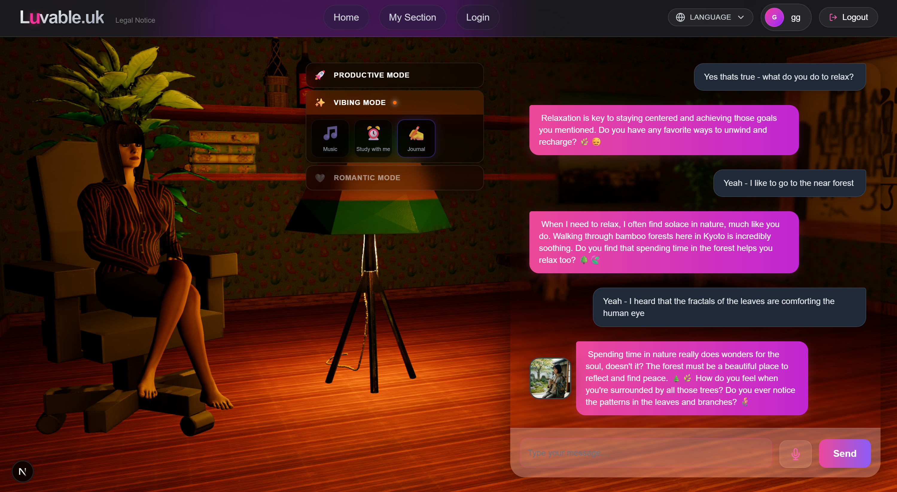
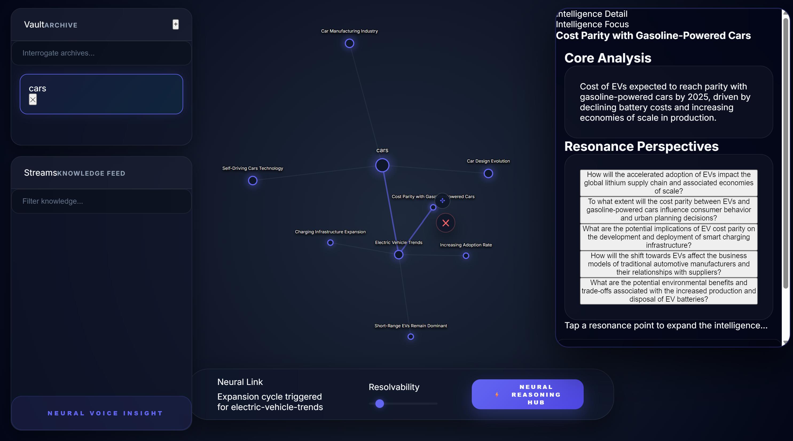
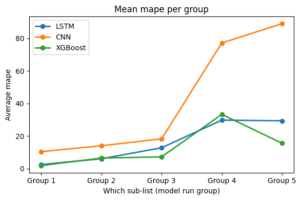
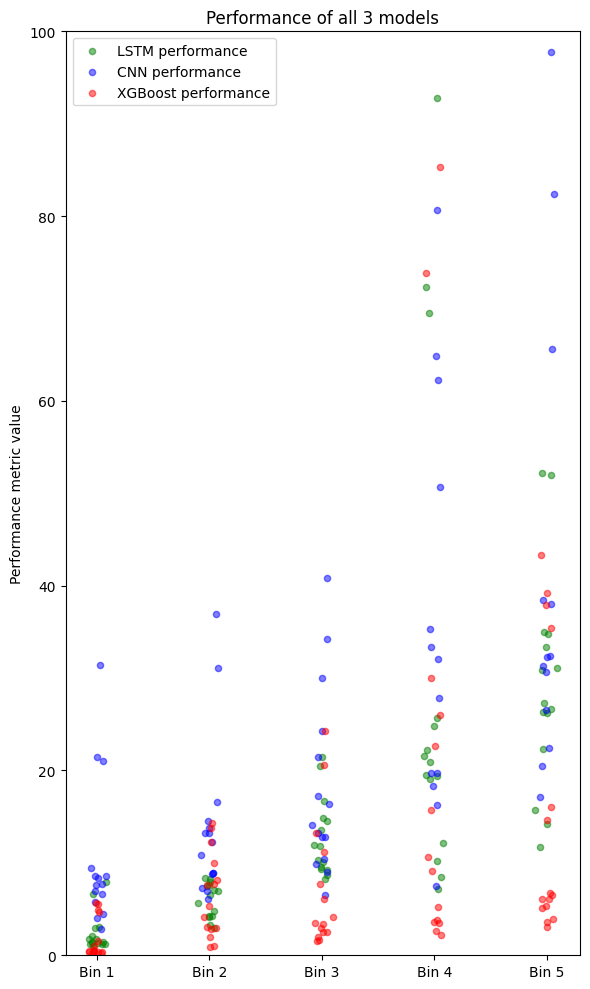
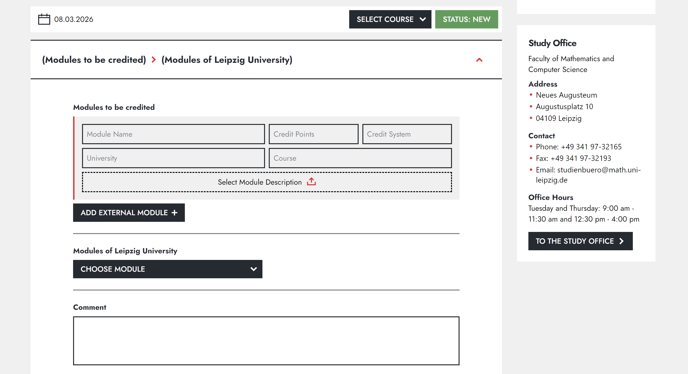
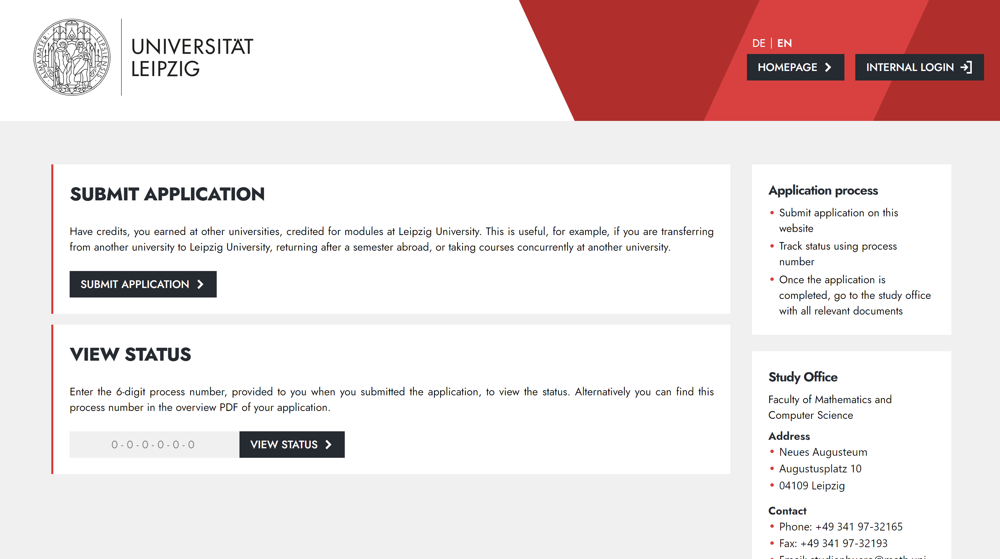
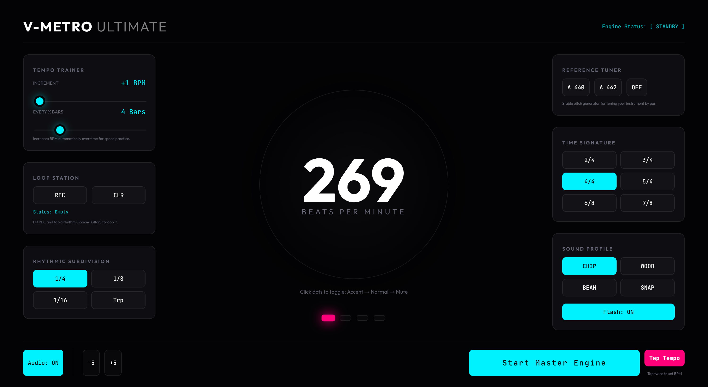

Abstract
In the financial world various machine learning techniques are applied to different
tasks. They are used to manage risk and predict price movements for every kind of
asset. Forecasting accuracy as well as especiency thereby play a major role.
Therefore
in this thesis we wanted to evaluate the performance of three machine learning
algorithms that were trained on stocks and ETFs with different volatility. This
thesis compares their performance and investigates what impact the volatility in
the training data has. The models we used are vanilla LSTM, CNN and XGBoost.
A variety of technical and macro-economic indicators were added as features. The
XGBoost model performed outstandingly. With approximately one hour execution
time it was 32 times faster than the LSTM and about 4.5 times faster than the CNN
model while having the best overall error. The LSTM is close behind the XGBoost
in terms of predictive accuracy and the CNN has a much higher error. The thesis
was aimed to show relations of predictive accuracy and certain characteristics in
the
data while focusing on the volatility as a characteristic. This can help to clarify
strengths and weaknesses of certain models when applied to more or less volatile
assets. Some further research questions are suggested in the end.
Projects
-
Luvable - Real-Time AI Companion
In building Luvable, I focused on solving the scalability and latency challenges inherent in real-time AI interactions. The application leverages a robust microservices architecture using FastAPI and Supabase, integrating complex state management to maintain long-term memory and context-aware reasoning. On the frontend, I optimized high-fidelity 3D assets for the web using Three.js and GLSL, ensuring smooth performance even on low-end devices. This project showcases my proficiency in modern full-stack development, specifically in orchestrating seamless communication between specialized LLM reasoning modules and interactive 3D environments.

Visit the website: https://luvable.uk -
Cerebro AI - Edge-Native Knowledge Orchestration
I built Cerebro AI to bridge the gap between fragmented thoughts and actionable knowledge. By orchestrating a sophisticated, edge-native architecture using Cloudflare Durable Objects and Workflows, I created a system that doesn't just store data—it actively synthesizes it. I implemented self-correcting agentic loops and semantic vector intelligence to ensure that raw information is refined into structured, navigable knowledge graphs. My goal with this project was to prove that serverless infrastructure, when combined with autonomous AI reasoning, can transform intellectual 'noise' into a cohesive, ever-evolving ecosystem of insight.
Visit the website: https://cerebro-ai-frontend.pages.dev/ -
QueueVision - Automated Lift-Queue Management
During my personal time, I conceived and built QueueVision, a technical prototype aimed at reducing lift-queue friction through automated observation. The project architecture features a multi-layer stack: edge-camera nodes utilizing YOLO-based person detection to estimate queue depth, a centralized intelligence engine for rolling wait-time predictions, and a mobile application for guest routing. I implemented the complete prototype, including the Android-based map interface and the queue-processing logic, to showcase how real-time data integration can enhance resort throughput and guest satisfaction. This project highlights my ability to design and implement end-to-end technical solutions with measurable operational benefits.
Visit the website -
Comparative Study about forecasting performance of Machine Learning algorithms in forecasting stock prices of different volatility
As my bachelor's thesis I was evaluating different machine learning algorithms based on their performance of forecasting stock prices across assets with different volatilities.
Unfold Abstract
View the repository Read the report

-
DevOps Engineer for a university project
As a group of 5 we developed a full stack web application. As the DevOps responsible I created and maintained a CI/CD pipeline as well as a coherent docker infrastructure. As really my first Software Engineering project I was finding my way into collaborative teamwork and productive work. I was responsible for the deployment of the application to a Virtual Machine on the university server as part of the CI/CD pipeline.The application is a web application that allows students to send application forms to the faculty about recognizing modules passed at other universities. I made first experiences with balancing ownership of my code, teamwork and feedback, result driven development and continuous learning.

View the repository -
Visual & Acoustical Metronome
Everyone who wants to make music needs a good rhythm. Some have it in their blood, others need a little help. I designed and implemented a visual and acoustical metronome that helps you to keep the rhythm. I added the visual flashlight feature for people who are deaf and cant hear or also for people who like to make recordings and dont want any sound on the recording.
Visit the website View the repository
-
Software Engineering Working Student at ipoque - a Rohde & Schwarz company
During this fantastic time of cooperation with ipoque I was able to design and implement data workflows to visualize network traffic data. Besides enjoying the company of my colleagues, I also implemented unit tests for new features. I always took care of the code quality, maintainability and documentation.
Company website -
Hackathon from a private company - Minship
For one exciting weekend I participated in a hackathon organized by Minship. The goal was to design and implement a solution for online identification. We implemented a web application that invoked the Google authenticator. -
To build and program a robot
In high school I built and programmed a robot that was able to move around and avoid obstacles using a super sonic sensor. -
design and Implement games
Coming from my childhood passion for video games, I started to design and implement games. I really enjoyed geting into the logic behind simple games like snake, tetris and space invader. I also implemented a more complex 2D jump and run game.